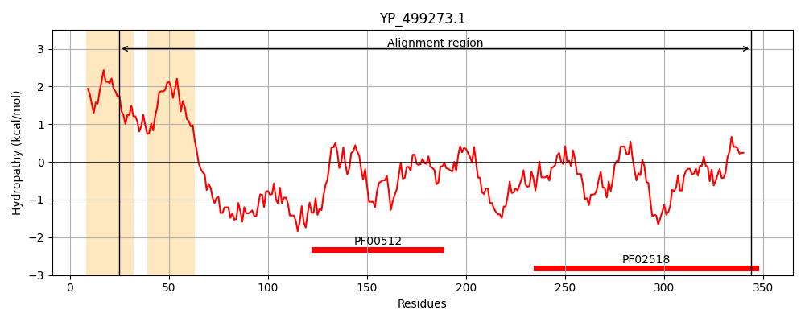
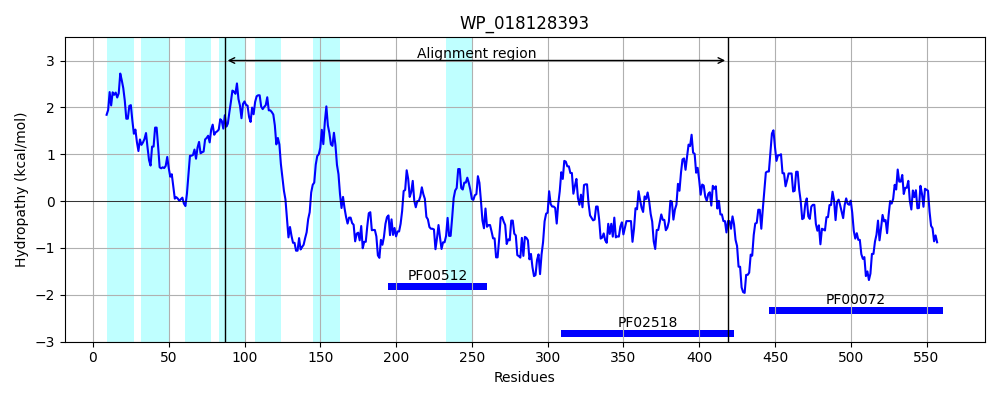
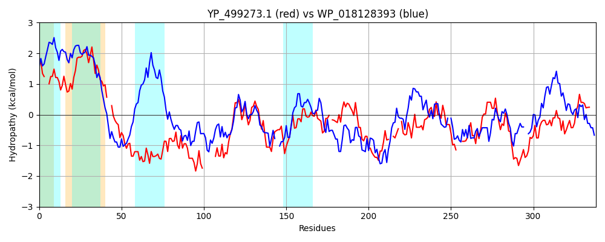

Hit Accession: WP_018128393
Hit TCID: 9.B.238.3.1
Hit Description: gnl|BL_ORD_ID|20890 gnl|TC-DB|WP_018128393.1|9.B.238.3.1 hybrid sensor histidine kinase/response regulator [Balneola vulgaris]
Mach Len: 338
e:0.000000
Query TMS Count : 2
Hit TMS Count: 7
TMS-Overlap Score: 1.950000
Predicted Substrates:None
BLAST Alignment:
Score: 234 , Bit scores: 94 bits, E-value: 2.2e-21, Alignment length: 338, Percentage identity: 26
Query: 25 AIAY--ILMWFNGHMTLTLTLTTIITSCLTLLICSIFINPLI--QKIKQFNIKTKQFANGNYASNDKTFNSPKEIYELNQSFNKMASEITQQMNQIKSEQ-------QEKTELIQNLAHDLKTPLASIISYSEGLRDGIITKDHEIKESYDILIKQANRLSTLFDDMTHIITLNTGK-TYPPELIQLDQLLVSILQPYEQRIKHENRTLEVNF--CNEI-DAFYQYRTPLERILTNLLDNALKFSNVGSRIDIN---ISENEDQDTIDIAISDEGIGIIPELQERIFERTFRVENSRNTKTGGSGLGLYIANELAQQNNAKISVSSDIDVGTTMTVTL 344
AI Y IL++ +G + L L + S + +++ I + Q Q+ K Q + + S +Y +S+ ++++ + +KSE+ K++ + ++H+++TPL I+ +E L + ++ + +E L +N L++L D+ L K I + + L +++ ++ +I +N+ +E+ F +EI + T L +IL NL++NA+KF+N G I I I+E ED + I D GIGI + + +F + FR + N K G+GLGL I L N I V S + G+T T+ +
Sbjct: 87 AILYFVILLYISGLLVLPLRAYILFVSAIAVMVLGFTIYEYLFPQASNQYPDKLSQIRDLSLTSVITIATLGIALYIFKKSYISDREKLSKAVLDLKSEKIRAEAADDTKSQFLATISHEMRTPLNGIVGITELLEETNLSDEQ--RELVTNLAYSSNMLNSLIGDVLDYTLLEDRKLVLQNNEIHIQKELKNLVDMFKPKIDSKNKRIELKFEYDSEIPEIVIGDVTRLRQILVNLVNNAVKFTNEGY-IHIKTRFIAEEEDIQRVRFTIEDSGIGISEQDKALLFTKFFRAKT--NDKVEGTGLGLAICRGLIDLMNGAIYVDSKLGEGSTFTIEI 419 | Protein Hydropathy Plots: |
|---|
|  |  |
Pairwise Alignment-Hydropathy Plot:
|
|---|
|  |